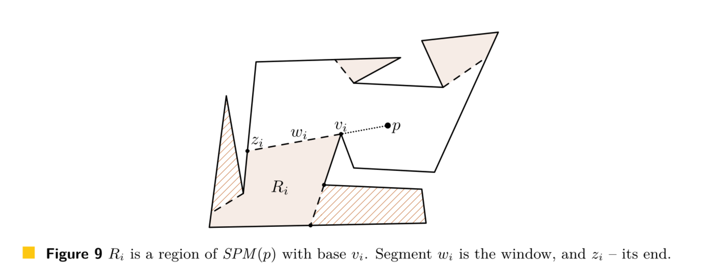
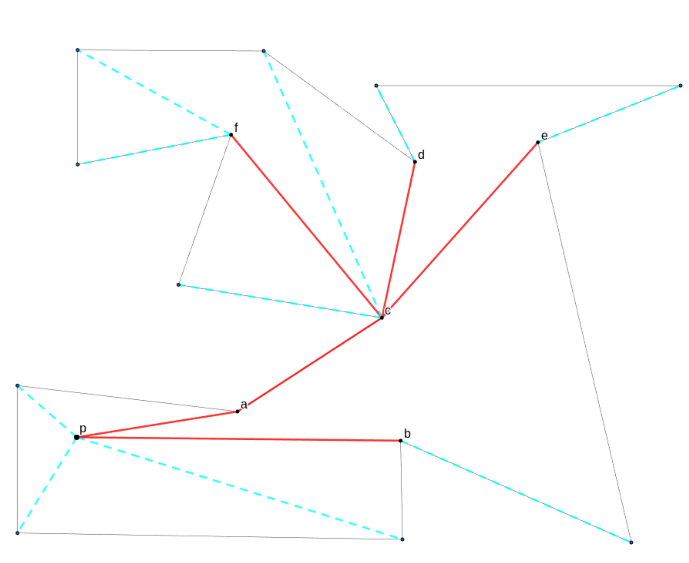

Glossary
Edges And Trajectories
Attraction Trajectory [AT(p,b)]: Indicate the movement path of a point p from its original location to the beacon b
Pull Edge: Straight movement towards the beacon
Separation Edge: A split edge between a dead region and AR(b)
Slide Edges: Consecutive sliding movements
Split Edge: The boundary between two dead regions, or a dead region and AR(b)
Points
Dead Point: A point that remains stationary in the attraction pull of a beacon b
Polygons
Simple Polygon: A Simple Polygon is a polygon that does not intersect itself and has no holes
Regions
Attraction-Convex Region: A region where every point attracts every other point
Attraction Region [AR]: The region of points that are attracted to a beacon
Dead Region: The set of all points in a polygon that eventually reach (and stay) on a dead point
Inverse Attraction Region [IAR]: The region of points that attract a beacon
Shortest Path
Shortest Path [SP (p,q)]: The shortest path between p and q in P
Shortest Path Map [SPM (p)]: A shortest path map for a given point p, denoted as SPM (p), is a subdivision of P into regions such that shortest paths from p to all the points inside the same region pass through the same set of vertices of P

Shortest Path Tree [SPT (p)]: The union of shortest paths from p to all vertices of P

The tree formed by (Treered ∪ Treeblue) is the Shortest Path Tree from p to all vertices of P. In the Inverse Attraction Region (IAR), we are only interested in the red tree, which is the SPT (p) pruned of all non-reflex vertices, denoted SPTr (p).
Vertex
Reflex Vertex: A reflex vertex is a point in a polygon where the internal angle exceeds 180 degrees